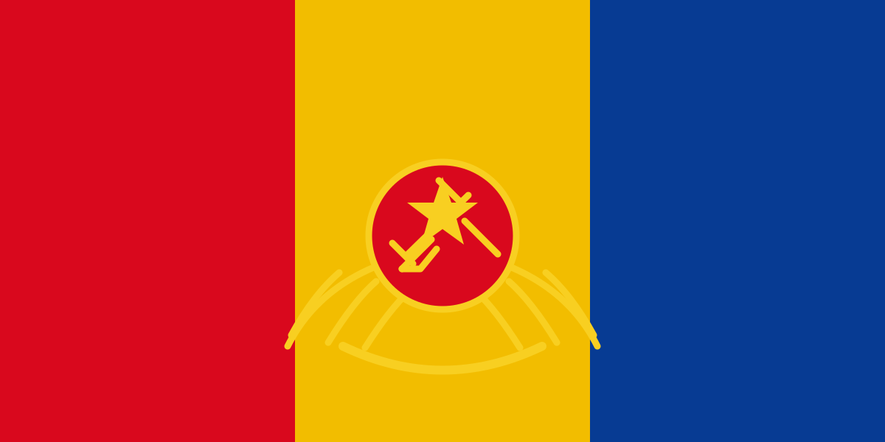

NATIONAL IDENTITY
National symbols
The flag, emblem and motto of Interland.

The flag
The Interland banner is composed of vertical red, gold and blue fields and bears the national emblem.
The coat of arms

National motto
“Interland es eterna — Interland forever free.”